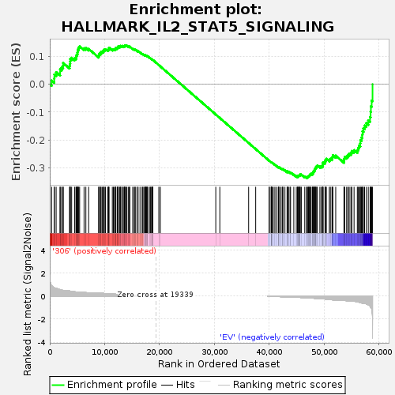
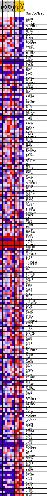
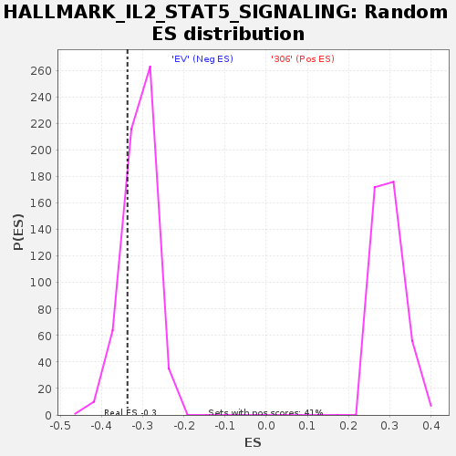

| | | Dataset | 306_EV_express.306_EV.cls#306_versus_EV |
| Phenotype | 306_EV.cls#306_versus_EV |
| Upregulated in class | EV |
| GeneSet | HALLMARK_IL2_STAT5_SIGNALING |
| Enrichment Score (ES) | -0.33681393 |
| Normalized Enrichment Score (NES) | -1.0910953 |
| Nominal p-value | 0.21901529 |
| FDR q-value | 0.6181564 |
| FWER p-Value | 1.0 |
Table: GSEA Results Summary

Fig 1: Enrichment plot: HALLMARK_IL2_STAT5_SIGNALING
Profile of the Running ES Score & Positions of GeneSet Members on the Rank Ordered List
| SYMBOL | TITLE | RANK IN GENE LIST | RANK METRIC SCORE | RUNNING ES | CORE ENRICHMENT | | 1 | ABCB1 | NNN | 335 | 0.903 | 0.0133 | No |
| 2 | RORA | NNN | 814 | 0.717 | 0.0203 | No |
| 3 | TTC39B | NNN | 833 | 0.709 | 0.0349 | No |
| 4 | SERPINC1 | NNN | 1162 | 0.661 | 0.0432 | No |
| 5 | RRAGD | NNN | 1885 | 0.549 | 0.0425 | No |
| 6 | HIPK2 | NNN | 1886 | 0.549 | 0.0540 | No |
| 7 | CTLA4 | NNN | 2156 | 0.524 | 0.0605 | No |
| 8 | PIM1 | NNN | 2420 | 0.489 | 0.0663 | No |
| 9 | PLPP1 | NNN | 2454 | 0.484 | 0.0759 | No |
| 10 | ENPP1 | NNN | 3602 | 0.438 | 0.0656 | No |
| 11 | TNFRSF4 | NNN | 3700 | 0.430 | 0.0730 | No |
| 12 | ALCAM | NNN | 3724 | 0.428 | 0.0816 | No |
| 13 | IL10RA | NNN | 3736 | 0.427 | 0.0904 | No |
| 14 | CAPN3 | NNN | 3988 | 0.406 | 0.0946 | No |
| 15 | NFKBIZ | NNN | 4528 | 0.369 | 0.0932 | No |
| 16 | PTCH1 | NNN | 4768 | 0.356 | 0.0966 | No |
| 17 | EOMES | NNN | 4833 | 0.352 | 0.1030 | No |
| 18 | GPR65 | NNN | 4982 | 0.351 | 0.1078 | No |
| 19 | SCN9A | NNN | 5052 | 0.350 | 0.1140 | No |
| 20 | LRIG1 | NNN | 5089 | 0.348 | 0.1207 | No |
| 21 | BCL2 | NNN | 5184 | 0.342 | 0.1263 | No |
| 22 | MXD1 | NNN | 5278 | 0.335 | 0.1318 | No |
| 23 | SELP | NNN | 5443 | 0.328 | 0.1359 | No |
| 24 | FGL2 | NNN | 6249 | 0.316 | 0.1288 | No |
| 25 | PLAGL1 | NNN | 6578 | 0.299 | 0.1295 | No |
| 26 | GBP4 | NNN | 7088 | 0.274 | 0.1266 | No |
| 27 | GLIPR2 | NNN | 8909 | 0.266 | 0.1012 | No |
| 28 | IKZF2 | NNN | 8967 | 0.264 | 0.1058 | No |
| 29 | NDRG1 | NNN | 9062 | 0.258 | 0.1096 | No |
| 30 | SPRY4 | NNN | 9290 | 0.249 | 0.1110 | No |
| 31 | HK2 | NNN | 9347 | 0.245 | 0.1152 | No |
| 32 | IL18R1 | NNN | 9554 | 0.239 | 0.1167 | No |
| 33 | IFNGR1 | NNN | 9770 | 0.231 | 0.1179 | No |
| 34 | SPP1 | NNN | 9806 | 0.230 | 0.1221 | No |
| 35 | RABGAP1L | NNN | 9956 | 0.223 | 0.1243 | No |
| 36 | AHR | NNN | 10157 | 0.217 | 0.1254 | No |
| 37 | DHRS3 | NNN | 10548 | 0.202 | 0.1230 | No |
| 38 | CD86 | NNN | 10689 | 0.196 | 0.1248 | No |
| 39 | GABARAPL1 | NNN | 10744 | 0.195 | 0.1280 | No |
| 40 | NCOA3 | NNN | 10802 | 0.193 | 0.1311 | No |
| 41 | IL2RB | NNN | 11400 | 0.179 | 0.1246 | No |
| 42 | AGER | NNN | 11594 | 0.173 | 0.1250 | No |
| 43 | IGF1R | NNN | 11776 | 0.167 | 0.1254 | No |
| 44 | IGF2R | NNN | 11955 | 0.162 | 0.1258 | No |
| 45 | PLSCR1 | NNN | 12010 | 0.159 | 0.1282 | No |
| 46 | MAFF | NNN | 12049 | 0.158 | 0.1309 | No |
| 47 | KLF6 | NNN | 12306 | 0.151 | 0.1297 | No |
| 48 | IKZF4 | NNN | 12361 | 0.149 | 0.1320 | No |
| 49 | BHLHE40 | NNN | 12468 | 0.146 | 0.1332 | No |
| 50 | DCPS | NNN | 12478 | 0.146 | 0.1361 | No |
| 51 | TWSG1 | NNN | 12750 | 0.140 | 0.1344 | No |
| 52 | NFIL3 | NNN | 12867 | 0.137 | 0.1353 | No |
| 53 | NT5E | NNN | 12923 | 0.136 | 0.1373 | No |
| 54 | BMPR2 | NNN | 13153 | 0.129 | 0.1361 | No |
| 55 | DENND5A | NNN | 13242 | 0.126 | 0.1372 | No |
| 56 | IL4R | NNN | 13508 | 0.120 | 0.1352 | No |
| 57 | POU2F1 | NNN | 13611 | 0.118 | 0.1360 | No |
| 58 | XBP1 | NNN | 13635 | 0.117 | 0.1380 | No |
| 59 | SPRED2 | NNN | 13712 | 0.114 | 0.1391 | No |
| 60 | MUC1 | NNN | 13844 | 0.111 | 0.1393 | No |
| 61 | MYC | NNN | 14033 | 0.107 | 0.1383 | No |
| 62 | MYO1E | NNN | 14302 | 0.101 | 0.1358 | No |
| 63 | BATF3 | NNN | 14513 | 0.096 | 0.1343 | No |
| 64 | ITGAV | NNN | 14598 | 0.094 | 0.1348 | No |
| 65 | PTH1R | NNN | 15116 | 0.082 | 0.1277 | No |
| 66 | GPR83 | NNN | 15375 | 0.081 | 0.1250 | No |
| 67 | TRAF1 | NNN | 15527 | 0.078 | 0.1241 | No |
| 68 | SH3BGRL2 | NNN | 15673 | 0.075 | 0.1232 | No |
| 69 | P4HA1 | NNN | 16010 | 0.067 | 0.1189 | No |
| 70 | BMP2 | NNN | 16096 | 0.065 | 0.1188 | No |
| 71 | MAPKAPK2 | NNN | 16447 | 0.063 | 0.1141 | No |
| 72 | SLC29A2 | NNN | 16825 | 0.054 | 0.1089 | No |
| 73 | NCS1 | NNN | 16945 | 0.052 | 0.1079 | No |
| 74 | HUWE1 | NNN | 17138 | 0.047 | 0.1056 | No |
| 75 | FURIN | NNN | 17302 | 0.044 | 0.1038 | No |
| 76 | CYFIP1 | NNN | 17413 | 0.042 | 0.1028 | No |
| 77 | SNX9 | NNN | 17467 | 0.041 | 0.1027 | No |
| 78 | ITGA6 | NNN | 17479 | 0.040 | 0.1034 | No |
| 79 | FLT3LG | NNN | 17627 | 0.038 | 0.1017 | No |
| 80 | SMPDL3A | NNN | 17708 | 0.036 | 0.1011 | No |
| 81 | CKAP4 | NNN | 17749 | 0.035 | 0.1011 | No |
| 82 | AHCY | NNN | 17845 | 0.033 | 0.1002 | No |
| 83 | MAP6 | NNN | 18159 | 0.027 | 0.0955 | No |
| 84 | IRF4 | NNN | 18338 | 0.024 | 0.0929 | No |
| 85 | TIAM1 | NNN | 18447 | 0.021 | 0.0915 | No |
| 86 | FAH | NNN | 18600 | 0.018 | 0.0893 | No |
| 87 | ARL4A | NNN | 18711 | 0.016 | 0.0878 | No |
| 88 | MAP3K8 | NNN | 18736 | 0.015 | 0.0877 | No |
| 89 | RHOB | NNN | 18790 | 0.014 | 0.0871 | No |
| 90 | F2RL2 | NNN | 19880 | 0.000 | 0.0685 | No |
| 91 | IL13 | NNN | 20150 | 0.000 | 0.0639 | No |
| 92 | TNFSF11 | NNN | 30257 | 0.000 | -0.1085 | No |
| 93 | PTGER2 | NNN | 30998 | 0.000 | -0.1211 | No |
| 94 | CXCL10 | NNN | 36245 | 0.000 | -0.2105 | No |
| 95 | GATA1 | NNN | 37531 | 0.000 | -0.2325 | No |
| 96 | UCK2 | NNN | 39991 | -0.007 | -0.2742 | No |
| 97 | SLC39A8 | NNN | 40015 | -0.008 | -0.2745 | No |
| 98 | ETV4 | NNN | 40341 | -0.015 | -0.2797 | No |
| 99 | PNP | NNN | 40374 | -0.016 | -0.2799 | No |
| 100 | TNFRSF18 | NNN | 40391 | -0.017 | -0.2798 | No |
| 101 | TNFRSF21 | NNN | 40445 | -0.018 | -0.2803 | No |
| 102 | CA2 | NNN | 40526 | -0.020 | -0.2813 | No |
| 103 | RNH1 | NNN | 40739 | -0.024 | -0.2844 | No |
| 104 | IL3RA | NNN | 41027 | -0.030 | -0.2887 | No |
| 105 | LRRC8C | NNN | 41306 | -0.036 | -0.2926 | No |
| 106 | LCLAT1 | NNN | 41643 | -0.042 | -0.2975 | No |
| 107 | SYT11 | NNN | 41729 | -0.044 | -0.2980 | No |
| 108 | CD81 | NNN | 41731 | -0.044 | -0.2971 | No |
| 109 | ODC1 | NNN | 41784 | -0.046 | -0.2970 | No |
| 110 | PRNP | NNN | 42117 | -0.052 | -0.3016 | No |
| 111 | CD83 | NNN | 42358 | -0.057 | -0.3045 | No |
| 112 | UMPS | NNN | 42452 | -0.060 | -0.3048 | No |
| 113 | CTSZ | NNN | 42503 | -0.060 | -0.3044 | No |
| 114 | NOP2 | NNN | 42860 | -0.068 | -0.3090 | No |
| 115 | ANXA4 | NNN | 43250 | -0.077 | -0.3140 | No |
| 116 | IFITM3 | NNN | 43330 | -0.079 | -0.3137 | No |
| 117 | CDC42SE2 | NNN | 43344 | -0.079 | -0.3123 | No |
| 118 | GALM | NNN | 43521 | -0.083 | -0.3135 | No |
| 119 | PLEC | NNN | 43786 | -0.089 | -0.3162 | No |
| 120 | P2RX4 | NNN | 43890 | -0.092 | -0.3160 | No |
| 121 | CCND3 | NNN | 44477 | -0.092 | -0.3240 | No |
| 122 | PHTF2 | NNN | 44936 | -0.104 | -0.3297 | No |
| 123 | ENO3 | NNN | 45148 | -0.108 | -0.3310 | No |
| 124 | TNFRSF1B | NNN | 45215 | -0.110 | -0.3298 | No |
| 125 | CDCP1 | NNN | 45217 | -0.110 | -0.3275 | No |
| 126 | IRF6 | NNN | 45357 | -0.111 | -0.3276 | No |
| 127 | ITGAE | NNN | 45464 | -0.114 | -0.3270 | No |
| 128 | SNX14 | NNN | 45497 | -0.114 | -0.3251 | No |
| 129 | SLC1A5 | NNN | 45632 | -0.117 | -0.3249 | No |
| 130 | PHLDA1 | NNN | 45633 | -0.118 | -0.3225 | No |
| 131 | CISH | NNN | 45848 | -0.122 | -0.3235 | No |
| 132 | HOPX | NNN | 46472 | -0.139 | -0.3312 | No |
| 133 | GPX4 | NNN | 46800 | -0.148 | -0.3337 | Yes |
| 134 | PUS1 | NNN | 46901 | -0.150 | -0.3322 | Yes |
| 135 | ECM1 | NNN | 47055 | -0.153 | -0.3316 | Yes |
| 136 | SERPINB6 | NNN | 47147 | -0.156 | -0.3299 | Yes |
| 137 | MYO1C | NNN | 47227 | -0.158 | -0.3279 | Yes |
| 138 | S100A1 | NNN | 47340 | -0.162 | -0.3264 | Yes |
| 139 | SHE | NNN | 47423 | -0.164 | -0.3244 | Yes |
| 140 | PTRH2 | NNN | 47481 | -0.166 | -0.3219 | Yes |
| 141 | GSTO1 | NNN | 47633 | -0.170 | -0.3209 | Yes |
| 142 | CAPG | NNN | 47871 | -0.178 | -0.3211 | Yes |
| 143 | LTB | NNN | 47906 | -0.179 | -0.3180 | Yes |
| 144 | CASP3 | NNN | 48050 | -0.183 | -0.3165 | Yes |
| 145 | RGS16 | NNN | 48065 | -0.184 | -0.3129 | Yes |
| 146 | CDC6 | NNN | 48114 | -0.186 | -0.3098 | Yes |
| 147 | CDKN1C | NNN | 48259 | -0.190 | -0.3083 | Yes |
| 148 | COCH | NNN | 48313 | -0.192 | -0.3051 | Yes |
| 149 | DRC1 | NNN | 48382 | -0.195 | -0.3022 | Yes |
| 150 | SYNGR2 | NNN | 48485 | -0.199 | -0.2998 | Yes |
| 151 | PLIN2 | NNN | 48513 | -0.200 | -0.2960 | Yes |
| 152 | SWAP70 | NNN | 48665 | -0.206 | -0.2942 | Yes |
| 153 | CSF2 | NNN | 48757 | -0.209 | -0.2914 | Yes |
| 154 | CST7 | NNN | 49229 | -0.230 | -0.2946 | Yes |
| 155 | ICOS | NNN | 49483 | -0.237 | -0.2939 | Yes |
| 156 | ST3GAL4 | NNN | 49707 | -0.238 | -0.2927 | Yes |
| 157 | SLC2A3 | NNN | 49732 | -0.239 | -0.2881 | Yes |
| 158 | GADD45B | NNN | 49757 | -0.239 | -0.2835 | Yes |
| 159 | LIF | NNN | 49829 | -0.243 | -0.2796 | Yes |
| 160 | CSF1 | NNN | 50165 | -0.256 | -0.2799 | Yes |
| 161 | AHNAK | NNN | 50227 | -0.260 | -0.2755 | Yes |
| 162 | TLR7 | NNN | 50253 | -0.261 | -0.2704 | Yes |
| 163 | TNFRSF8 | NNN | 50409 | -0.269 | -0.2674 | Yes |
| 164 | TNFSF10 | NNN | 50950 | -0.296 | -0.2703 | Yes |
| 165 | WLS | NNN | 51142 | -0.304 | -0.2672 | Yes |
| 166 | APLP1 | NNN | 51435 | -0.318 | -0.2655 | Yes |
| 167 | SOCS1 | NNN | 51520 | -0.323 | -0.2601 | Yes |
| 168 | IL10 | NNN | 51598 | -0.327 | -0.2546 | Yes |
| 169 | PDCD2L | NNN | 52118 | -0.349 | -0.2561 | Yes |
| 170 | BCL2L1 | NNN | 53619 | -0.364 | -0.2740 | Yes |
| 171 | AMACR | NNN | 53645 | -0.366 | -0.2667 | Yes |
| 172 | CD44 | NNN | 53756 | -0.373 | -0.2607 | Yes |
| 173 | ITIH5 | NNN | 54105 | -0.400 | -0.2582 | Yes |
| 174 | CD48 | NNN | 54355 | -0.417 | -0.2537 | Yes |
| 175 | PENK | NNN | 54573 | -0.417 | -0.2486 | Yes |
| 176 | TNFRSF9 | NNN | 54875 | -0.420 | -0.2449 | Yes |
| 177 | CCR4 | NNN | 55074 | -0.429 | -0.2393 | Yes |
| 178 | NRP1 | NNN | 55461 | -0.449 | -0.2364 | Yes |
| 179 | ADAM19 | NNN | 56053 | -0.491 | -0.2362 | Yes |
| 180 | SOCS2 | NNN | 56190 | -0.507 | -0.2278 | Yes |
| 181 | BATF | NNN | 56367 | -0.530 | -0.2197 | Yes |
| 182 | CCNE1 | NNN | 56589 | -0.557 | -0.2117 | Yes |
| 183 | EMP1 | NNN | 56618 | -0.561 | -0.2004 | Yes |
| 184 | IL1R2 | NNN | 56808 | -0.586 | -0.1913 | Yes |
| 185 | PRAF2 | NNN | 56966 | -0.612 | -0.1810 | Yes |
| 186 | SELL | NNN | 57001 | -0.619 | -0.1686 | Yes |
| 187 | COL6A1 | NNN | 57166 | -0.637 | -0.1580 | Yes |
| 188 | IRF8 | NNN | 57379 | -0.643 | -0.1481 | Yes |
| 189 | TGM2 | NNN | 57689 | -0.668 | -0.1393 | Yes |
| 190 | CCND2 | NNN | 58049 | -0.742 | -0.1298 | Yes |
| 191 | CD79B | NNN | 58375 | -0.863 | -0.1171 | Yes |
| 192 | PRKCH | NNN | 58477 | -0.945 | -0.0990 | Yes |
| 193 | IL1RL1 | NNN | 58528 | -0.984 | -0.0791 | Yes |
| 194 | IL2RA | NNN | 58670 | -1.087 | -0.0586 | Yes |
| 195 | RHOH | NNN | 58828 | -2.914 | 0.0000 | Yes |
Table: GSEA details [plain text format]

Fig 2: HALLMARK_IL2_STAT5_SIGNALING
Blue-Pink O' Gram in the Space of the Analyzed GeneSet

Fig 3: HALLMARK_IL2_STAT5_SIGNALING: Random ES distribution
Gene set null distribution of ES for HALLMARK_IL2_STAT5_SIGNALING